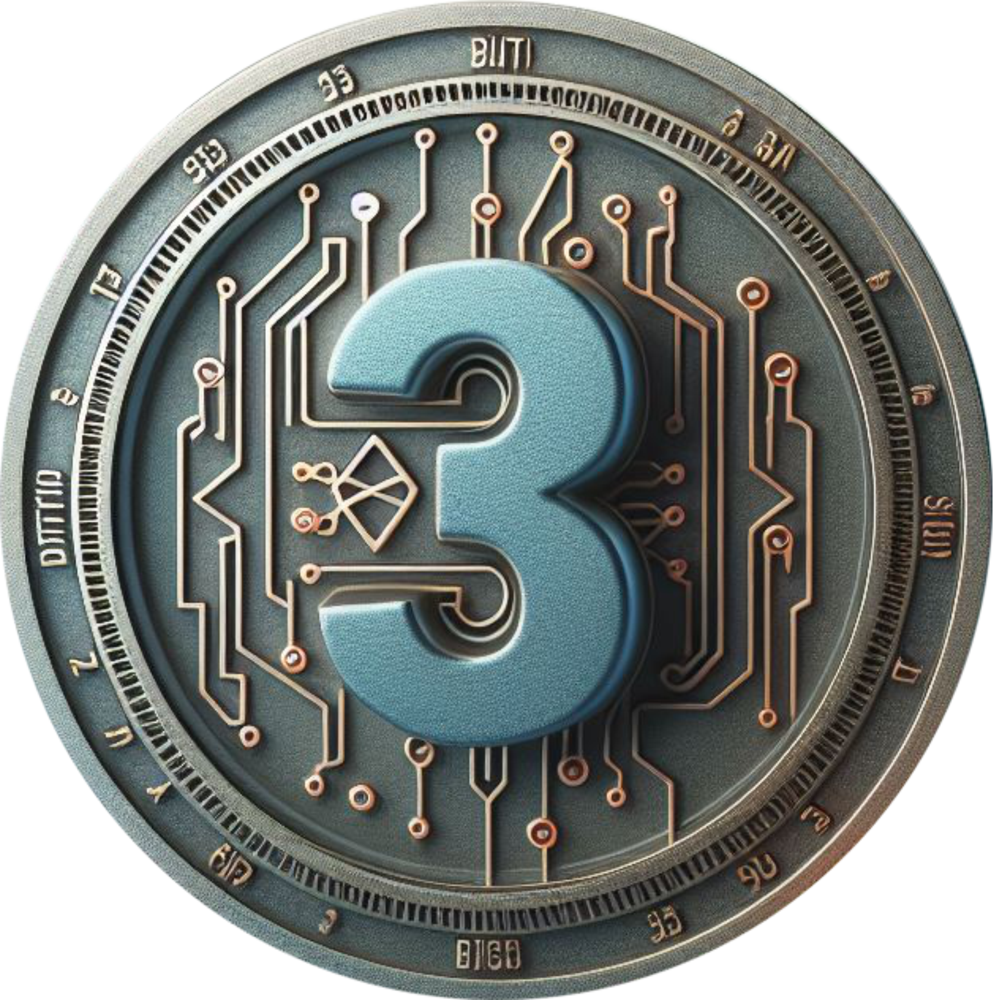

¡Vamos a romperla, mi gente!
El proyecto "BIT3T" es un bootcamp innovador que busca transformar el panorama de la educación tecnológica en Latinoamérica. Nuestro objetivo es formar profesionales en áreas de alta demanda en el mundo de la tecnología, como Full Stack, Data Science, Gerencia DevOps y Blockchain.
El propósito principal de nuestro proyecto es proporcionar una solución a la creciente necesidad de profesionales capacitados en tecnologías emergentes en Latinoamérica. A través de nuestro sistema de formación, buscamos preparar a los estudiantes para carreras en IT con sueldos competitivos a nivel internacional, superiores a los 130,000 dólares anuales.
Además, nuestro proyecto incorpora un innovador sistema de financiamiento basado en tokens. Este sistema permite a los estudiantes financiar su educación sin costos iniciales y reembolsar la inversión una vez que estén trabajando en el mundo IT. Este enfoque no solo facilita el acceso a la educación tecnológica, sino que también permite a los inversores contribuir al proyecto y potencialmente obtener un retorno de su inversión.
En Latinoamérica, existe una brecha significativa en la educación tecnológica. Los sueldos son bajos, la preparación en tecnologías emergentes es insuficiente y la inversión en proyectos tecnológicos es limitada. Además, muchos estudiantes se enfrentan a barreras adicionales, como la falta de habilidades en inglés.
Nuestro proyecto busca abordar estos problemas de frente. A través de nuestro bootcamp, proporcionamos una formación intensiva en habilidades técnicas y en inglés, preparando a los estudiantes para carreras en IT y ayudándoles a superar las barreras para entrar en el mundo tech. Al hacerlo, esperamos contribuir a cerrar la brecha en la educación tecnológica y abrir nuevas oportunidades para los profesionales en Latinoamérica.
Lo que distingue a "BIT3T" de otros bootcamps o programas de capacitación en ciencia de datos es nuestra capacidad para otorgar becas a los estudiantes y nuestro enfoque en la autogestión y la autosustentación del proyecto. Además, estamos implementando oportunidades tecnológicas de vanguardia y orientando nuestro proyecto como un metaverso, con un enfoque en la tecnología blockchain. Esto nos permite no solo preparar a los profesionales para el mundo IT, sino también capitalizar nuestro proyecto y proporcionar una oportunidad de inversión para aquellos con visión y compromiso.
En "BIT3T", entendemos que la computación es una de las principales tecnologías emergentes que se están utilizando en América Latina y en todo el mundo. Nuestro objetivo es llevar la computación al extremo, preparando a nuestros estudiantes para dominar las habilidades y técnicas más avanzadas en este campo.
Nuestro enfoque en la computación va más allá de la enseñanza de habilidades básicas de programación. Nos enfocamos en áreas de alta demanda como Full Stack, Data Science, Gerencia DevOps y Blockchain, y proporcionamos a nuestros estudiantes una formación intensiva en estas áreas. Además, incorporamos las últimas tendencias y tecnologías en nuestro currículo, asegurándonos de que nuestros estudiantes estén a la vanguardia de la industria.
Además, nuestro proyecto incorpora un innovador sistema de financiamiento basado en tokens. Este sistema no solo facilita el acceso a la educación tecnológica, sino que también permite a los estudiantes participar activamente en la economía digital y comprender cómo funcionan las tecnologías blockchain y los tokens.
La demanda de profesionales capacitados en tecnologías emergentes está creciendo rápidamente en América Latina. Sin embargo, muchas personas en la región enfrentan barreras para acceder a la educación en tecnología, como costos elevados y falta de programas de formación de calidad.
Nuestro proyecto busca abordar estas necesidades proporcionando una formación de alta calidad en computación de manera accesible y asequible. Al hacerlo, esperamos ayudar a cerrar la brecha en la educación tecnológica en la región y abrir nuevas oportunidades para los profesionales en Latinoamérica.
En "BIT3T", reconocemos la importancia de la gestión de proyectos tecnológicos. Nuestro programa se centra en formar líderes que puedan supervisar y planificar sistemas de TI, asegurando que todos los sistemas funcionen de manera segura y eficiente. Nuestros gerentes de proyectos estarán equipados para supervisar sistemas de TI, ordenadores y redes en todos los departamentos, supervisar al personal técnico y planificar nuevos sistemas a medida que la empresa crece.
La ciencia de datos es un campo en rápido crecimiento y hay una demanda creciente de especialistas en datos. En "BIT3T", preparamos a nuestros estudiantes para convertirse en científicos de datos y especialistas en algoritmos. Nuestros graduados estarán equipados para ayudar a las organizaciones a estructurar las diferentes fuentes de datos que tienen y a desarrollar estrategias basadas en estos datos.
La tecnología blockchain está revolucionando una variedad de campos, desde el arte digital hasta la educación. En "BIT3T", enseñamos a nuestros estudiantes cómo funciona la tecnología blockchain y cómo puede ser utilizada para rastrear y comercializar cualquier cosa de valor. Nuestros graduados estarán preparados para aprovechar las oportunidades que ofrece la tecnología blockchain, desde la creación de NFTs hasta la mejora de la seguridad de las transacciones.
En "BIT3T", reconocemos que el desarrollo de software es una habilidad esencial en el mundo de la tecnología. Nuestro programa prepara a los estudiantes en lenguajes de programación demandados como Java, .Net y Python, equipándolos con las habilidades necesarias para desarrollar software de alta calidad.
Nuestro programa también se centra en la formación de ingenieros DevOps. Estos profesionales son esenciales para unir a las personas, los procesos y las tecnologías para ofrecer valor a los clientes de forma constante. Nuestros graduados estarán equipados para responder mejor a las necesidades de los clientes, aumentar la confianza en las aplicaciones que crean y alcanzar los objetivos empresariales en menos tiempo.
Según datos de la International Data Corporation (IDC), esperamos un crecimiento del 9.4% en 2022, 12% en 2023 y una proyección del 25% en 2024 en el sector tecnológico en nuestra región. Creemos que el futuro económico de los países de nuestra región estará indudablemente más ligado al crecimiento y las oportunidades que presenta la industria tecnológica.
Reconocemos el crecimiento de los metaversos y las startups como indicadores del contexto actual del sector tecnológico. Nuestro proyecto busca capitalizar estas tendencias y preparar a nuestros estudiantes para aprovechar las oportunidades que ofrecen.
Nuestro proyecto no solo prepara a los profesionales en estos campos, sino que también demuestra en la práctica que la implementación funciona y que se pueden obtener buenos, excelentes y legítimos resultados tangibles.
¡Vamos a romperla, mi gente!

Como parte de nuestro proyecto, implementaremos el token BIT3T. Este token permitirá la monetización del proyecto y proporcionará una forma para que los estudiantes financien su educación y reembolsen la inversión una vez que estén trabajando en el mundo IT.
La cantidad total de tokens BIT3T será de 100,000,000. Estos tokens se distribuirán de la siguiente manera:
Esperamos que la implementación del token BIT3T permita la autogestión y la autosustentación del proyecto, y proporcione una oportunidad de inversión para aquellos con visión y compromiso.
El esquema de inversión con porcentajes, cantidad de tokens por ítems, tiempo en cada liberación de tokens, preventa y todo lo referente es el siguiente:
La preventa del token BIT3T se realizará un mes antes del lanzamiento oficial del proyecto. Durante la preventa, se ofrecerá un descuento del 20% sobre el precio inicial del token, que se fijará en 0.01 USD. Se pondrán a la venta 10,000,000 BIT3T, que equivalen al 10% del suministro total. La preventa tendrá una duración de 15 días o hasta que se agoten los tokens disponibles. Los interesados en participar en la preventa deberán registrarse en la página web del proyecto y seguir las instrucciones para realizar la compra.
En "BIT3T", estamos llevando la innovación un paso más allá al incorporar NFTs (Tokens No Fungibles) en nuestro modelo educativo. Cada estudiante tendrá su propio NFT único, que representará su perfil y estará basado en su desempeño y CV.
Estos NFTs son propiedad de "BIT3T" y se pondrán a la venta por solo el 25% del costo de la educación del estudiante. Una vez que el estudiante se gradúa y comienza a trabajar, el valor del NFT se triplicará. Gracias al retorno de la inversión del estudiante, comenzará el retorno en cuotas mensuales hasta el retorno del capital del inversor en la educación estudiantil. Una vez retornado el dinero al inversor, el NFT pasará nuevamente a ser propiedad de "BIT3T" para su quema.
Además, habrá NFTs especiales o con emisiones especiales para su venta en el marketplace de "BIT3T". Estos NFTs representarán una oportunidad única para los inversores y ayudarán a financiar nuestro proyecto.
"BIT3T" es más que un simple bootcamp de tecnología. Es un proyecto innovador que busca transformar la educación tecnológica en Latinoamérica y abrir nuevas oportunidades para los profesionales en la región.
Nuestro enfoque en áreas de alta demanda como Full Stack, Data Science, Gerencia DevOps y Blockchain, junto con nuestro innovador sistema de financiamiento basado en tokens y NFTs, nos permite proporcionar una formación de alta calidad de manera accesible y asequible.
Creemos que nuestro proyecto no solo ayudará a cerrar la brecha en la educación tecnológica en Latinoamérica, sino que también abrirá nuevas oportunidades para los profesionales en la región y proporcionará una oportunidad de inversión para aquellos con visión y compromiso.
Esperamos que "BIT3T" sea un catalizador para el crecimiento y las oportunidades en la industria tecnológica en Latinoamérica.